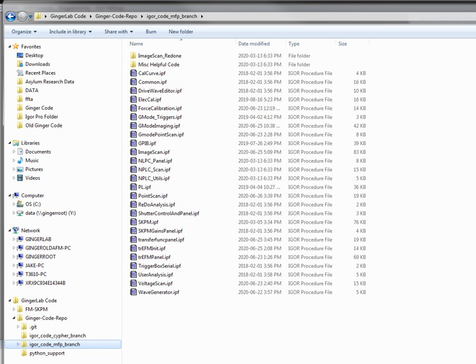
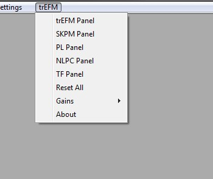
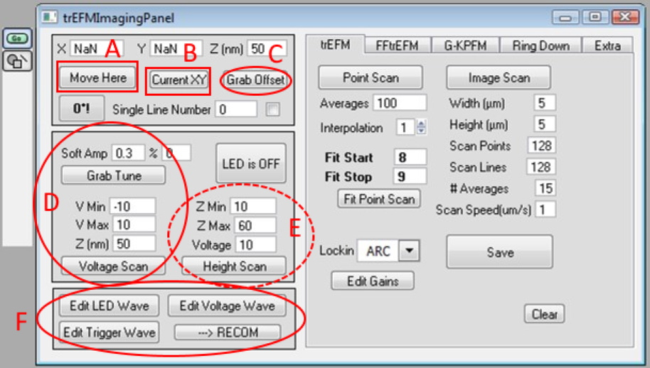

trEFM Igor Setup Guide¶
Rajiv Giridharagopal
Navigate to the “GingerLab Code/Ginger-Code-Repo/igor_code_mfp_branch” directory.

Highlight all files in the directory, then drag and drop into Igor.

Press compile.

After that, a “trEFM” menu will appear.

These contain several panels.

trEFM panel: The main panel. You always need to run this.
SKPM panel: Only for FM-Kelvin probe.
PL panel: For Photoluminescence.
NLPC panel: For Justin’s nonlocal photocurrent measurement.
TF panel: For Raj’s transfer function measurement panel.
Reset all: Resets all the parameters.

These contain the gains needed for these techniques.
We never need to edit the trEFM ones these days.
SKPM ones you should open as you WILL need to edit those for FM-SKPM
This is the trEFM panel.

A: Move to whichever coordinates you input.
B: Displays the current cantilever XY position.
C: Grabs the X and Y offset from the Master Panel. You’ll need to click this several times.
D: These set up the cantilever for FM modes.
Grab tune: Finds the drive amplitude required for the cantilever to oscillate at 0.3 V (this is effectively like hitting Autotune with a Target Amplitude of 0.3, but our code does its own thing)
Voltage Scan: Measures the frequency shift parabola. If the system is working, you’ll get a nice parabola from -10 V to +10 V. For very sensitive perovskites, you can set this to +/- 5 V instead. If you see noise, STOP! Something is not connected correctly.
E: Height scan isn’t used.
F: These control the various signals being sent out.
Trigger comes out of Output 0 on the ARC LED comes out of Output 1 on the ARC Voltage comes out of Output 2 on the ARC.
LED is used to trigger the Gage card and, as evidenced by the name, turn on an LED or laser. Primarily it’s the trigger for the Gage card.
Trigger, ironically, is not actually a trigger signal. It isn’t actually that important. It exists for historical reasons and some esoteric use cases. The output is mapped differently in GKPFM.
Voltage is what is being sent to the tip during EFM mode. The output on the ARC is for diagnostic purposes.
The –>Recom button doesn’t do anything any more. It works on the Cypher specifically (sometimes) but is used when you want to trigger the system on the falling edge instead of a rising edge. This is a pretty rare use case